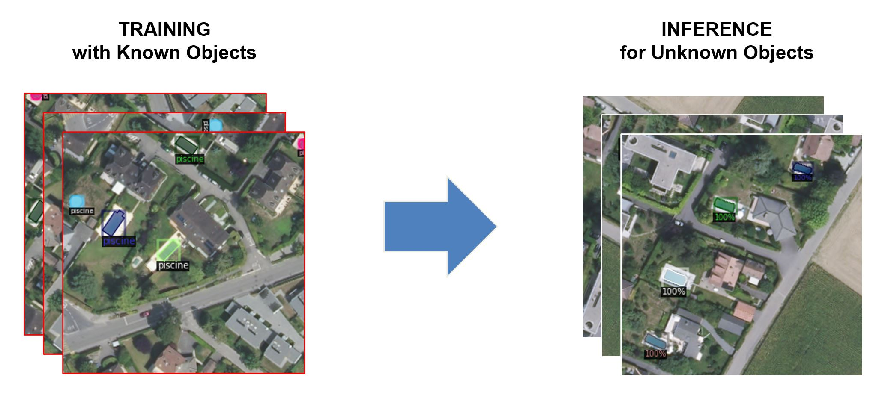
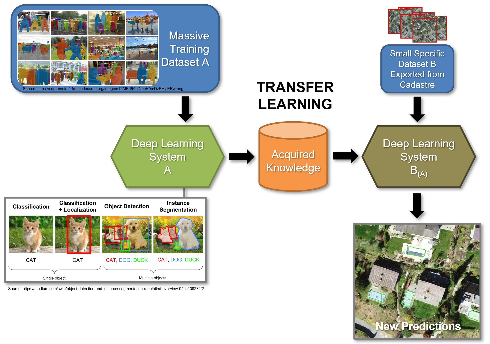
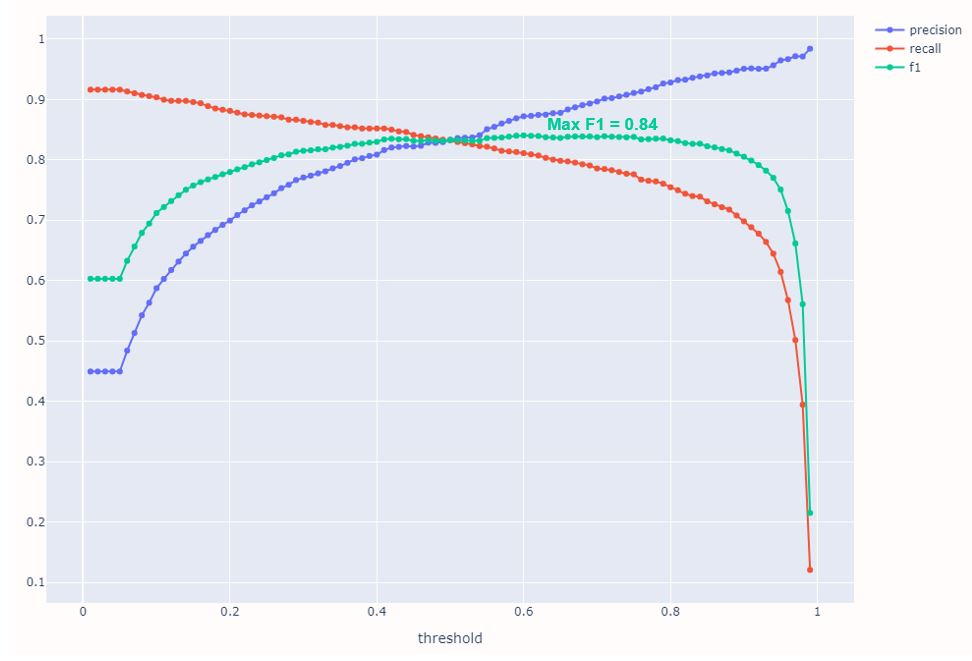
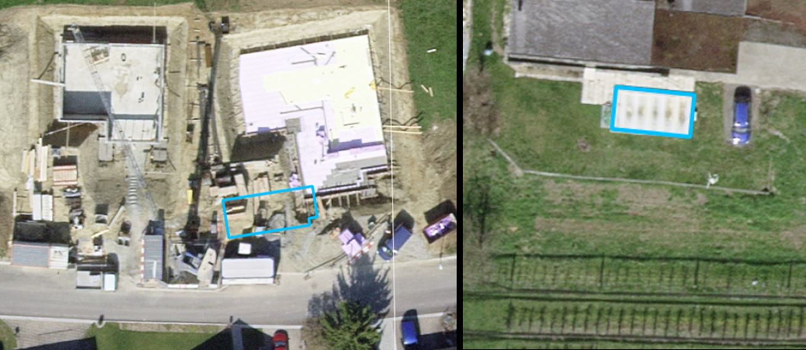
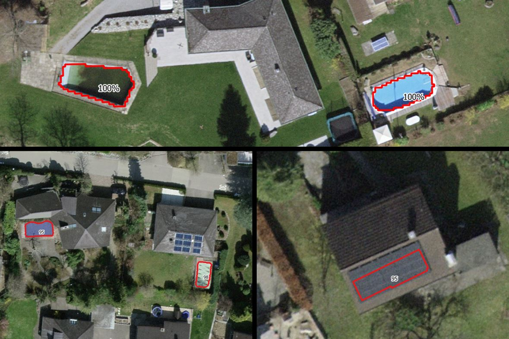
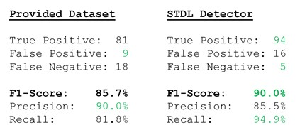

SWIMMING POOL DETECTION FOR THE CANTON OF THURGAU¶
Adrian Meyer (FHNW) - Alessandro Cerioni (Canton of Geneva)
Proposed by the Canton of Thurgau - PROJ-TGPOOL
January 2021 to April 2021 - Published on April 21, 2021
Abstract: The Canton of Thurgau entrusted the STDL with the task of producing swimming pool detections over the cantonal area. Specifically interesting was to leverage the ground truth annotation data from the Canton of Geneva to generate a predictive model in Thurgau while using the publicly available SWISSIMAGE aerial imagery datasets provided by swisstopo. The STDL object detection framework produced highly accurate predictions of swimming pools in Thurgau and thereby proved transferability from one canton to another without having to manually redigitize annotations. These promising detections showcase the highly useful potential of this approach by greatly reducing the need of repetitive manual labour.

Introduction¶
Until February 2021 the Swiss Territorial Data Lab developed an approach based on Mask RCNN Deep Learning algorithms for the detection of objects on aerial images, with swimming pools serving as a demonstration object. The official cadastres of the Canton of Thurgau include – among many other objects – the registration of larger private swimming pools that are permanently anchored in the ground.
The challenge is to keep the cadastre up to date on a regular basis which is usually done manually by surveying or verification with aerial imagery. Because the Canton of Thurgau (unlike the Canton of Geneva) does not maintain an own specific register of swimming pools, this study primarily serves as a technology demonstration.
A secondary goal encompasses detailed knowledge transfer from the data scientist team at the STDL to the cantonal authorities such as providing insight and interpretation guidance into the performance metrics and raising awareness for the prerequisites of the detector framework.
Methodology¶
Process Overview¶

Generating a Model from Cadastral Vectors and Aerial Images to Predict Objects in the Same or a New Area of Interest (AoI).
The STDL object detection framework is based on a bipartite approach of training and inference. This means that a predictive model is statistically adapted to known and verified data ("training") in order to then generate classification predictions on new, unknown data ("inference"). To achieve this we resample large high-resolution orthophoto mosaics by decomposing them into small square image tiles on which vectorized annotations of swimming pools are drawn.
Verified vector annotation data ("ground truth") for the training process was available for the cantonal area of Geneva, as well as for a smaller part of the cantonal area of Neuchâtel covering a total of almost 5'000 swimming pools present in 2019.
The predictive model used is a convolutional neural network developed for computer vision (Mask RCNN). It was trained on a high performance computing cluster at the University of Applied Sciences Northwestern Switzerland FHNW using the open source Detectron2 object detection library.
During inference, pixel-precise vector contours (“segments”) are produced over the tiled imagery of the canton of Thurgau. Each segment is attributed a confidence score which indicates the certainty of the detections when applied to new data. Using this score as a threshold level, performance metrics are computed in post-classification assessment.
Ground Truth Dataset¶

Label annotations are derived from cadastral data and manually curated
Vector ground truth annotations demarcating private swimming pools were available at two locations: A near-complete coverage of the cantonal area of Geneva which contains 4’652 known objects, as well as a smaller subsection of the cantonal area of Neuchatel which contains 227 known objects. Label annotations in both cases are derived from cadastral surface vector datasets and then manually curated/verified. In case of the Geneva dataset the manual verification was performed by STDL data scientists in a previous study; in case of the Neuchatel dataset the manual verification was performed by the local cadastre experts.
Reference Data and Area of Interest¶

Approximately 5000 cross checked swimming pool annotations are available as vectorized shapes in the Cantons of Geneva and partially in Neuchâtel. They are compatible with orthophotos from 2018/19 such as the latest SWISSIMAGE 10cm layer.
The Area of Interest (AoI) for all tests conducted in this study are divided into two main sections:
-
Those areas in Geneva and Neuchatel containing vectorized ground truth labels are used as “Training AoI”.
-
The cantonal area of Thurgau is used as “Prediction AoI”.
Only those parts of the cantonal surface of Thurgau are used as Prediction AoI which are designated as relevant settlement areas. For this purpose the STDL has received two additional reference datasets from the canton of Thurgau:
-
Vector layer: List of all water basins from the official survey; 3'131 objects.
-
Vector layer: Settlement areas / construction zones to delimit the study area.
2,895 objects from the water basin layer are located wholly or partially within the “Prediction AoI”. Only these objects were used for analysis (see Figure 4, light green objects). For each grid square, an image file with 256x256 pixels edge length and 60cm GSD was generated by WMS. Metadata and georeferencing were stored in an associated JSON. A quick qualitative review of the Thurgau datasets in QGIS revealed two limitations of the datasets.
About 7,5% of the water basins are not located in the selected settlement area (e.g., on remote farmsteads or mixed industrial / commercial zones), so no detection attempt was initially undertaken for areas encompassing these objects. It is important to note that there are some objects in the water basin layer that are not comparable to private swimming pools in shape or size, such as public large scale swimming pools, but also sewage treatment plants, silos, tanks, reservoirs, or retention dams. By limiting the Prediction AoI to residential areas and adjacent land, the largest portion of these objects could be excluded.

Example of a water treatment plant that appears in the “water basin layer” and had to be excluded by limiting the “Prediction AoI” to residential and adjacent areas.
To additionally calculate metrics on the quality of this reference dataset vs. the quality of the detections a small area over the city of Frauenfeld (Thurgau) containing approximately 100 swimming pools was manually curated and verified by the STDL data scientists.
Orthocorrected Imagery¶

Orthoimagery tiles of 150m/256px edge length containing labelled annotations
Both AoIs are split by a regular checkerboard segmentation grid into squares (“tiles”), making use of the “Slippy Map Tiles” quadtree-style system. The image data used here was tested with different zoom level resampling resolutions (Ground Sampling Distance, GSD) between 30 cm and 480 cm edge length per pixel while maintaining a consistent extent of 256x256 pixels. Query of the imagery was undertaken using public web map services such using common protocols such as WMS or the MIL standard.
Three separate imagery sources were used over the course of the study. The 10cm GSD RGB orthophotomosaic layer SWISSIMAGE of Swisstopo was the primary target of investigation as it was used as the basis of prediction generation over the cantonal area of Thurgau. SWISSIMAGE was also used as the imagery basis for most of the training test runs over the ground truth areas of Geneva and Neuchatel. Additionally, a model was trained leveraging combined cantonal orthophoto imagery from Geneva (SITG) and Neuchatel (SITN) to comparatively test the prediction performance of such a model on the unrelated SWISSIMAGE inference dataset in Thurgau.
As it was known from the STDL’s previous work, that the usage of tiles exhibiting a GSD of ~60cm/Px (tile zoom level 18) offered a decent tradeoff between reaching high accuracies during training while keeping computational effort manageable this approach was used for the test using the own cantonal imagery of Geneva and Neuchatel.
Using SWISSIMAGE for training, zoom levels in a range between 15 (~480 cm/Px) and 19 (~30 cm/Px) were tested.
Training¶
Transfer Learning¶
The choice of a relevant predictive approach fell on a “COCO-pretrained” deep learning model of the type "ResNet 50 FPN" structured in a “Mask-RCNN” architecture and implemented with Python and the Detectron2 API. In a transfer learning process about 44 million trainable statistical parameters are adapted (“finetuned”) as edge weights in a pretrained neural network graph through a number of iterations trying to minimize the value of the so-called “loss function” (which is a primary measure for inaccuracy in classification).

Transfer Learning is common practice with Deep Learning models. The acquired knowledge gained from massive datasets allows an adaptation of the model to smaller new datasets.
Training is performed through highly multithreaded GPU parallelisation of the necessary tensor / matrix operations to speed up training duration. For this purpose the vector annotations are converted into pixel-per-pixel binary masks which are aligned with the respective input image.
Network- or Training-specific pre-set variables (“hyperparameters”) such as learning rate, learning rate decay, optimizer momentum, batch size or weight decay were either used in their standard configuration or iteratively manually tuned until comparatively high accuracies (e.g. by means of the F1-Score) could be reached. More systematic approaches such as hyperparameter grid search or advanced (e.g. Bayesian) optimization strategies could be implemented in follow-up studies.
Dataset Split¶
Tiles falling into the “Training AoI” but not exhibiting any intersecting area with the Ground Truth Labels are discarded. The remaining ground truth tile datasets are randomly sampled into three disjunct subsets:
-
The “Training Subset” consists of 70% of the ground truth tiles and is used to change the network graph edge weights.
-
The “Validation Subset” consists of another 15% of the ground truth tiles and is used to validate the generalization performance of the network during training. The iteration cycling is stopped when the loss on the validation dataset is minimized.
-
The “Test Subset” consists of the last 15% of the ground truth tiles and is entirely reserved from the training process to allow for independent and unbiased assessment in the post processing.

Subdivision of Ground Truth Datasets
Inference and Assessment¶
After training, tile by tile the entire “Prediction AoI” as well as the ground truth datasets presented to the final model for prediction generation. From a minimum confidence threshold up to 100% the model produces a segmentation mask for each swimming pool detection delimiting its proposed outer boundary. This boundary can be vectorized and transformed back from image space into map coordinates during post-processing. Through this process we can accumulate a consistent GIS-compatible vector layer for visualization, counting and further analysis.
In case of the ground truth data the resulting vector layer can be intersected with the original input data (especially the “Test Subset”) to obtain unbiased model performance metrics. In case of a well-performing model the resulting vector layer can then be intersected with the “Prediction AoI”-derived Thurgau dataset to identify missing or surplus swimming pools in the cadastre.
Results¶
Metrics and Model Selection¶

Results of different training runs using SWISSIMAGE depending on the chosen zoom level
The choice of a correct confidence threshold ("THR") is of central importance for the interpretation of the results. The division of a data set into true/false positives/negatives is a function of the confidence threshold. A high threshold means that the model is very confident of a detection; a low threshold means that as few detections as possible should be missed, but at the same time more false positive ("FP") detections should be triggered.

Results of different training runs using SWISSIMAGE depending on the chosen zoom level
There are several standardized metrics to evaluate model performance on unknown data. The most important are "Precision" (user accuracy), "Recall" (hit rate or producer accuracy) and "F1 Score" (the mathematical harmonic mean of the other two). "Precision" should increase with higher THR, "Recall" should decrease. The maximum F1 Score can be used as a measure of how well the model performs regardless of the viewing direction.

Results of different training runs using SWISSIMAGE depending on the chosen zoom level
Using the cantonal orthomosaics as training input with zoom level 18 the F1 Score reached a maximum of 81,0%. Using SWISSIMAGE as training input with zoom level 18 a slightly higher maximum F1 Score of 83,4% was achieved resulting in the choice of a “only SWISSIMAGE” approach for both, training and inference.
The best detection by means of maximum F1 Score was reached using tiles with zoom level 19 displaying a GSD of approx. 30 cm/Px. Since the Slippy Map tile system is based on equal division of squares increasing the zoom level by one step results roughly in quadrupling the number of tiles presented for analysis. Hence also computational demand increases with an exponential factor in particular for file system read/write and sequential processing operations if the zoom level is increased.
On the other hand increasing the zoom level (and therefor the GSD) also boosts visibility and size of the target objects which in turn increases detection accuracy. Comparatively slight increases in F1 Score between zoom levels 17, 18 and 19 suggest an asymptotic behaviour where the usage of massively higher amounts computing resources will not result in a much higher detection accuracy any longer. Zoom level 20 (GSD~15cm/Px) was not computed for this reason.
True Positives¶
A detection is considered "True Positive" (TP) if the algorithm detected a pool that was listed at the same position in the cadastral layer. Setting the threshold very low (THR ≥ 5%), 2'227 of 2’959 swimming pools were detected. This corresponds to a detection proportion of 75% of the recorded water pools. Conversely, this could mean that 25% or 732 objects are False Negatives and therefore "erroneously" recorded in the cadastre as swimming pools or missed by the algorithm.

“True Positive” detections – note that cases of empty and covered swimming pools are detected with a very high confidence threshold in this example.
False Negatives¶
FN describe those objects that the algorithm completely failed to detect, no matter what threshold is set. A total of 732 objects were not detected. FN easily occur when there are obvious discrepancies between orthophoto and cadastre - for example, a pool may have been constructed after the time of flight.
The combined number from FN and TP corresponds to the number of analyzed labels from the water pool layer (2’959 objects). Due to the splitting of pools at the segmentation grid boundaries, this value is slightly higher than the 2’895 objects that were in the “Prediction AoI”. Here, only objects larger than 5m² in area were counted, since the segmentation grid cuts some pools into several parts and tiny residual of only a few pixels in total area polygons might otherwise be counted as FN even though the largest part of a swimming pool was detected (and therefore counted as TP).

“False Negatives” – (Left) An obvious mismatch between the cadastre and the orthophoto, an update should be considered. (Right) An ambiguous swimming pool which might be covered by a white canvas and was therefore missed by the detector.
False Positives¶
Swimming pools that were recognized as such in the orthophoto but are not found in the cadastre represent the FP group. If the threshold is set very low (e.g. THR ≥ 5%), a total of 9'427 additional pools would be found in the settlement area. However, this number is not realistic, since most of the detections at such a low threshold do not correspond to pools, but only mark image areas that are related to a pool in a very distant way.
Therefore, to get a better estimation of objects that really represent private pools but are still missing in the cadastre, the choice of a very high threshold is recommended. For example, the geoinformation services of the Canton of Geneva work with a threshold of THR ≥ 97%. Applying this threshold, 271 unrecorded swimming pools remain in the dataset with an extremely high probability of correct redetection (9% of the cadastre).
However, it is still worth looking at slightly less likely FP detections with a threshold of THR ≥ 90% here. Filtering with this value, a total of 672 unregistered swimming pools were found, which would correspond to 23% of the cadastre layer. At the same time the risk for clear errors by the object detector also increases at lower thresholds, leading to some misclassifications.

“False Positive” detections – (Top) Two clear examples of detected swimming pools that are missing in the cadastre. (Bottom Left) More ambiguous examples of detected swimming pools which might be missing in the cadastre. (Bottom Right) A clear error of the detector misclassifying a photovoltaic installation as a swimming pool.
Conclusion¶
Manual Evaluation¶
In the city of Frauenfeld a sample district was chosen for manual evaluation by a STDL data scientist. Even though this task should ideally be performed by a local expert this analysis does provide some insight on the potential errors currently existing within the cadastre as well as the object detection quality. Within the sampled area a total of 99 identifiable swimming pool objects were found to be present.

Table: Manually evaluated dataset accuracy vs. detector performance comparison. Green indicates the preferred value.
Overall, the STDL Detector was more accurate than the provided dataset with a F1 Score of ~90% vs. ~87%. Especially a lot fewer swimming pools (5 FN) were missing in the detections than in the cadastre (18 FN). Room for improvement exists with the False Positives, where our detector identified 16 surplus objects as potential swimming pools which could be falsified manually. At the same time only 9 surplus objects were found in the cadastre.
Interpretation¶
We can conclude that the use of annotation data gathered in another canton of Switzerland allows for highly accurate predictions in Thurgau using the freely and publicly available SWISSIMAGE dataset. We demonstrate that such a transferrable approach can therefore be applied within a relatively short time span to other cantons without the effort of manually digitizing objects in a new area. This is supported by the assumption that SWISSIMAGE is of the same consistent radiometrical and spatial quality we see in Thurgau over the whole country.
Manual evaluation will stay paramount before authorities take for example legal action or perform updates and changes to the cadastre. Nevertheless a great amount of workload reduction can be achieved by redirecting the eyes of the experts to the detected or undetected areas that are worth looking at.
References¶
-
Federal Office of Topography swisstopo (2020).
SWISSIMAGE 10 cm - The Digital Color Orthophotomosaic of Switzerland.
https://www.swisstopo.admin.ch/en/geodata/images/ortho/swissimage10.html -
Girshick, R. (2015).
Fast r-cnn.
In Proceedings of the IEEE international conference on computer vision (pp. 1440-1448).
https://openaccess.thecvf.com/content_iccv_2015/html/Girshick_Fast_R-CNN_ICCV_2015_paper.html -
He, K., Gkioxari, G., Dollár, P., & Girshick, R. (2017).
Mask r-cnn.
In Proceedings of the IEEE international conference on computer vision (pp. 2961-2969).
https://arxiv.org/abs/1703.06870 -
OpenStreetMap Foundation (2021).
Slippy Map.
https://wiki.openstreetmap.org/wiki/Slippy_Map -
QGIS.org (2021).
QGIS Geographic Information System.
QGIS Association.
https://qgis.org/en/site/ -
Wu, Y., Kirillov, A., Massa, F., Lo, W. Y., & Girshick, R. (2019).
Detectron2.
https://github.com/facebookresearch/detectron2